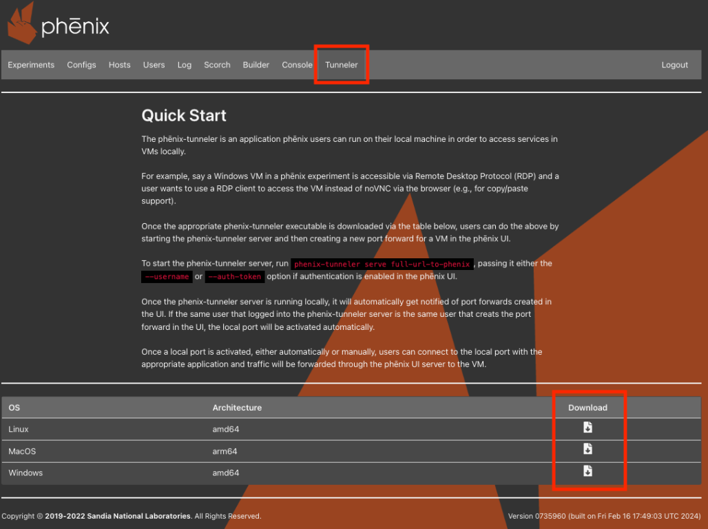

Tunneler¶
The phenix-tunneler is a small application that runs on a user's local
machine to forward TCP traffic from VMs in a running experiment down to
local ports. This lets a user interact with a VM directly using command line tools, instead of having to go through noVNC in a browser. A common
example is using a real RDP client to connect to a Windows VM instead of
interacting with it through noVNC (which enables things like copy/paste
support that noVNC does not).
Traffic is proxied through the phēnix UI server over a WebSocket connection, so the local machine only needs network access to the phēnix UI.
Downloading the Tunneler¶
Click on the Tunneler tab in the banner near the top of the phēnix UI.

This page lists the phenix-tunneler binaries built for the phēnix
instance's version, along with a download link for each supported OS and
architecture:
| OS | Architecture |
|---|---|
| Linux | amd64 |
| MacOS | arm64 |
| MacOS | amd64 |
| Windows | amd64 |
Download the binary that matches your local machine and make it
executable (on Linux/MacOS, chmod +x phenix-tunneler-<os>-<arch>).
Note
The Tunneler tab, and its downloads, are only available if the
phēnix server has been configured to serve tunneler binaries (a
downloads/tunneler directory must exist alongside the phēnix
binary on the server). This will be the case if you have a typical deployment using the Docker image.
Starting the Tunneler Server¶
Once downloaded, start the tunneler's local proxy server with the serve
subcommand, passing it the full URL to the phēnix UI:
If authentication is enabled in the phēnix UI, credentials must also be provided via one of the following flags:
--username(-u) -- the phēnix username to log in with. The tunneler will prompt for the corresponding password (input is hidden) and use it to log in to phēnix on your behalf.--auth-token(-t) -- an existing phēnix API/JWT auth token, used in place of a username/password login. The username is parsed directly out of the token, so a separate--usernameisn't needed.--use-cookie(-c) -- optional, only used alongside--auth-token. Sets the name of a cookie to send the auth token in, in addition to theX-Phenix-Auth-Tokenheader, for phēnix deployments that expect the token as a cookie.
# log in interactively with a username/password
phenix-tunneler serve https://phenix.example.com --username jdoe
# use an existing auth token instead of logging in
phenix-tunneler serve https://phenix.example.com --auth-token <token>
The serve command keeps running in the foreground and needs to stay
running for as long as forwarded ports should remain reachable locally.
While it runs, it:
- Connects to phēnix over a WebSocket and listens for port forward create/delete events happening across the phēnix UI.
- Fetches the list of port forwards that already exist for the logged-in user and creates local listeners for each of them.
- Automatically creates a new local listener any time the logged-in user creates a new port forward for a VM in the phēnix UI (see below).
- Exposes a local Unix domain socket (at
$TMPDIR/phenix/tunneler.sock) that the otherphenix-tunnelersubcommands (list,activate,deactivate,move) use to manage listeners whileserveis running.
Creating a Port Forward for a VM¶
With phenix-tunneler serve running locally, create a port forward for a
VM from the phēnix UI:
- Open a running experiment and click on a VM tile to open its VM information modal.
- Click the
create port forwardbutton (the arrow icon). This button requires the VM to be running with an active cc agent. - Fill out the
Create New Port Forwarddialog:Source Port-- the port to listen on locally.Destination Host-- the host, reachable from the phēnix server, to forward traffic to (typically the VM's own IP address).Destination Port-- the port on the destination host to forward traffic to (e.g.,3389for RDP).
- Click
Create.
If the port forward was created by the same user that's logged into the
running phenix-tunneler serve process, the local listener is activated
automatically -- no further action is needed. Port forwards created by
other users show up too, but must be activated manually (see
activate below) before they can be used locally.
Once a local port is listening, connect to it with whatever application
is appropriate (an RDP client, a database client, ssh, etc.) and
traffic will be forwarded through the phēnix UI server to the VM.
Existing port forwards for a VM are listed in the same VM information modal, and can be removed by clicking the trash icon next to a forward.
Managing Listeners from the Command Line¶
While phenix-tunneler serve is running, use the following subcommands
(in another terminal) to inspect and manage local listeners.
list¶
Show a table of all known port forwards, including their local port and whether or not they're currently listening (activated) locally.
activate <id>¶
Start listening locally on the local port assigned to the given listener ID. Used to manually activate a port forward that wasn't created by the logged-in user (and therefore wasn't activated automatically).
deactivate <id>¶
Stop listening locally for the given listener ID, without deleting the port forward itself.
move <id> <port>¶
Move an existing listener to a different local port.
Listener IDs used by activate, deactivate, and move can be found
in the output of phenix-tunneler list.